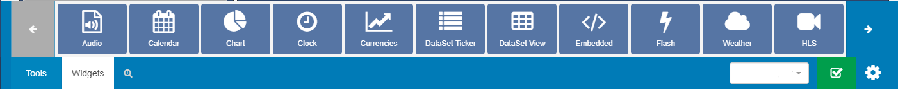
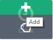
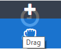
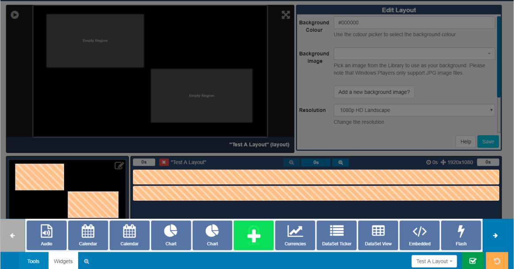
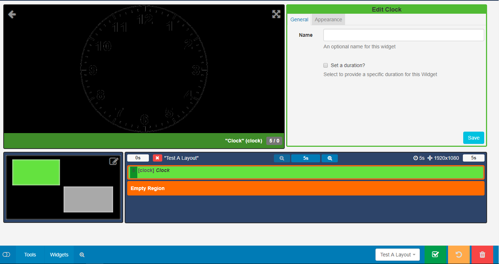

Widgets (New Features for 2.0)
Media is assigned to Layouts using Widgets, which provide the actions for the selected Module.
Widgets are available from the toolbar at the bottom of the Layout Designer to add to Regions. Use the arrows to scroll through all the the available Widgets.
Widgets that are available can be disabled/enabled by an Administrator in the Modules section of the CMS.

Adding to Regions
Clicking on a Widget will give you the option to click to Add 
or Drag and Drop 
Add the Widget by clicking directly on or dragging to a target Region.

Once added the Widget will be added to the Layout Timeline and can be configured using the available edit options in the Editor.

To make edits at anytime simply click on the Widget on the Layout Timeline to open the available options form for that Widget.
Click back on the tab to disable it from view for a 'clearer' work space.
Deleting from Regions
To delete, click on the Widget assigned in the Layout Timeline and click on the red bin icon in the bottom right hand corner of the screen.
Right-click on the Widget on the Layout Timeline to also delete. Attached Audio, Expiry Dates, Transition In, Transition Out and Permissions can also be edited in this way.